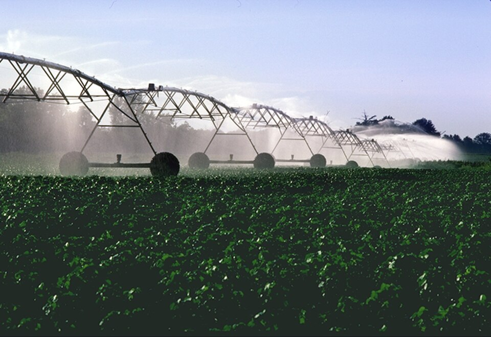

- 💧Uso Racional dos Recursos Hidrícos na produção
- 🌱 Sustentabilidade e Tecnologia no Campo
Gestão Hídrica na Agropecuária
A água é um recurso essencial para a agropecuária, sendo indispensável para a irrigação das lavouras e para a produção de alimentos. No entanto, o uso inadequado desse recurso pode causar desperdícios, impactos ambientais e prejuízos econômicos. Por isso, a gestão hídrica é fundamental para garantir a sustentabilidade do setor.

O que é Gestão Hídrica?
A gestão hídrica consiste no planejamento, monitoramento e controle do uso da água, buscando reduzir desperdícios e assegurar sua disponibilidade para as futuras gerações. Na agropecuária, essa prática é indispensável para equilibrar produtividade e preservação ambiental.p>

A Importância da Água na Agropecuária
A agricultura depende diretamente da água para manter a produção de alimentos. A irrigação permite o desenvolvimento adequado das culturas, especialmente em períodos de estiagem, contribuindo para a segurança alimentar e para o crescimento econômico do país.

Principais Desafios
- 💧 Desperdício de água
Em muitas propriedades rurais, a irrigação ainda é realizada sem o devido planejamento, resultando em perdas significativas de água.
- ⚠️ Falta de fiscalização
Em diversas bacias hidrográficas brasileiras, o monitoramento da captação e do consumo de água ainda é limitado, dificultando o controle do uso desse recurso.
- 🌎 Riscos de escassez hídrica
O consumo excessivo e a má gestão podem comprometer a disponibilidade de água para a população, para os ecossistemas e para a própria produção agrícola.

Tecnologia a Favor da Gestão Hídrica
Um estudo realizado por Letícia Burkert Mello Araujo e colaboradores demonstrou que o uso de tecnologias de sensoriamento remoto pode tornar a irrigação mais eficiente. A pesquisa utilizou imagens de satélite para monitorar lavouras de soja e milho, permitindo estimar com maior precisão a demanda hídrica das culturas. Os pesquisadores concluíram que essa tecnologia contribui para uma gestão mais sustentável da água e para a adaptação das práticas agrícolas às necessidades reais das plantações.
- Utilização de imagens de satélite para monitorar o desenvolvimento das culturas;
- Estimativa mais precisa da necessidade de irrigação;
- Redução de até 100 mm na quantidade de água utilizada em determinadas áreas;
- Economia de recursos hídricos sem comprometer a produtividade agrícola.
Tecnologia a Favor da Gestão Hídrica
Possíveis Soluções
- Investimento em tecnologias de irrigação eficiente;
- Uso de monitoramento por satélite;
- Ampliação da fiscalização das bacias hidrográficas;
- Capacitação de produtores rurais;
- Incentivo ao uso consciente da água.
Conclusão
A gestão hídrica é essencial para garantir o desenvolvimento sustentável da agropecuária. Nesse sentido, a adoção de tecnologias inovadoras, como as estudadas por Letícia Burkert Mello Araujo e sua equipe, demonstra que é possível aumentar a eficiência do uso da água e reduzir desperdícios. Assim, a união entre tecnologia, conscientização e fiscalização é fundamental para preservar os recursos hídricos e assegurar a produção de alimentos para as futuras gerações.
Desenvolvedores do Projeto

Marcelo


Integrante